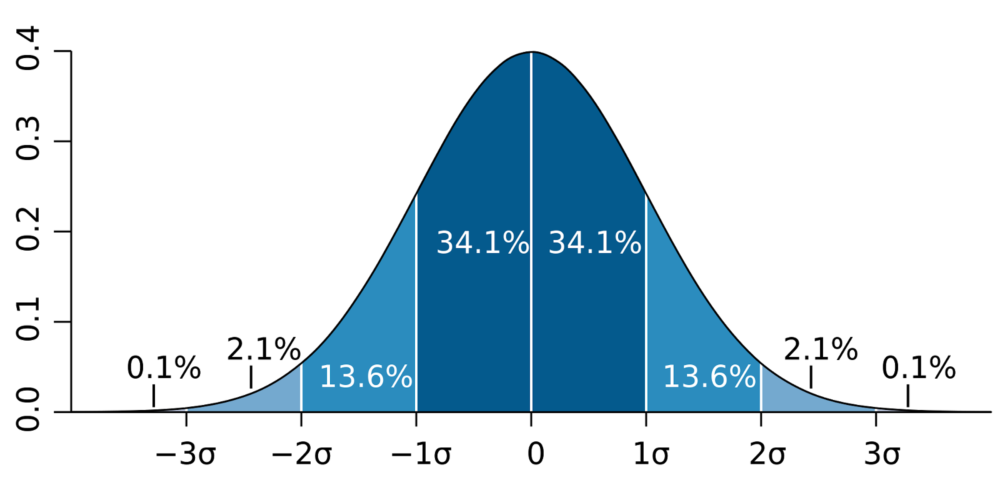
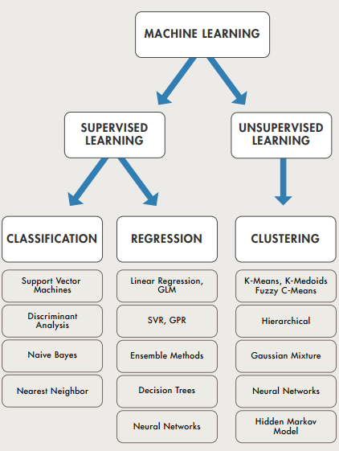

https://towardsdatascience.com/deploying-a-machine-learning-model-as-a-rest-api-4a03b865c166 . Flask Rest API for model
https://github.com/Avik-Jain/100-Days-Of-ML-Code
http://www.inference.phy.cam.ac.uk/itprnn/book.pdf
https://saru.science/tech/2018/02/15/kl-divergence-explanation.html
Kullback-Leibler divergence
https://news.ycombinator.com/item?id=17916981
https://www.youtube.com/user/PyDataTV/videos
https://bloomberg.github.io/foml/#lectures
https://appliedmachinelearning.blog/
https://ml-cheatsheet.readthedocs.io/en/latest/
https://github.com/afshinea/stanford-cs-229-machine-learning/blob/master/super-cheatsheet-machine-learning.pdf
https://stanford.edu/~shervine/teaching/cs-229/
ML BOOK with code:
https://arxiv.org/pdf/1803.08823
http://physics.bu.edu/~pankajm/ML-Notebooks/NotebooksforMLReview.zip - jupyter notebooks (zip)
Scikit-learn
https://www.interviewqs.com/blog/intro_to_scikit_learn
import matplotlib.pyplot as plt
from sklearn import linear_model
import numpy as np
from sklearn.metrics import mean_squared_error, r2_score
# data:
ar = np.array([[[1],[2],[3]], [[2],[4],[6]]]) # y=2*x
x = ar[0,:]
y = ar[1,:]
reg = linear_model.LinearRegression()
reg.fit(x,y)
print('Coefficients: \n', reg.coef_)
xTest = np.array([[4],[5],[6]])
ytest = np.array([[8],[10],[12]])
preds = reg.predict(xTest)
print("Mean squared error: %.2f" % mean_squared_error(ytest,preds))
print("Variance score: %.2f" % r2_score(ytest,preds))
plt.scatter(xTest,preds, color='black')
plt.plot(xTest,preds,color='blue', linewidth=3)
plt.show()
Links
https://sandipanweb.wordpress.com/
https://habr.com/company/intel/blog/417809/ . NN architectures for image recognition
https://habr.com/company/nixsolutions/blog/417935/ памятки по искусственному интеллекту
https://thegradient.pub/why-rl-is-flawed/
https://habr.com/post/418249/ . Google VM for ML
https://medium.com/syncedreview/google-ai-chief-jeff-deans-ml-system-architecture-blueprint-a358e53c68a5
https://news.ycombinator.com/item?id=17667705 . ML intro
https://news.ycombinator.com/item?id=17422770 Matrix 101 for ML
https://news.ycombinator.com/item?id=17664084 Math for ML
http://tools.google.com/seedbank/
https://developers.google.com/machine-learning/guides/
http://www.dataschool.io/easier-data-analysis-with-pandas/
ML from start to end
Open Machine Learning
https://towardsdatascience.com/forecasting-with-python-and-tableau-dd37a218a1e5 . Tableau+ARIMA+Python
https://mlcrunch.blogspot.com/2018/08/dimensionality-reduction-techniques-guide-python.html
https://github.com/Avik-Jain/100-Days-Of-ML-Code
https://sandipanweb.wordpress.com/2018/05/31/8626/
http://ciml.info/
https://news.ycombinator.com/item?id=17214588
http://ods.ai/
https://habrahabr.ru/company/ods/blog/344044/ Open Data Science
https://habrahabr.ru/company/ods/blog/325422/ Открытый курс машинного обучения. Тема 6. Построение и отбор признаков
Part 1
Part 2
Part 3
intrepretable-machine-learning-nfl
https://spandan-madan.github.io/DeepLearningProject/ End to End Implementation
https://towardsdatascience.com/visualizing-data-with-pair-plots-in-python-f228cf529166 Pair plots
http://www.moderndescartes.com/essays/deep_dive_mcts/ monte carlo tree search
Reinforcement learning
https://github.com/andri27-ts/60_Days_RL_Challenge
https://xaviergeerinck.com/markov-property-chain-reward-decision
https://mpatacchiola.github.io/blog/2016/12/09/dissecting-reinforcement-learning.html
https://github.com/Pulkit-Khandelwal/Reinforcement-Learning-Notebooks
https://habrahabr.ru/post/350328/ Reinforced learning
https://oneraynyday.github.io/ml/2018/05/06/Reinforcement-Learning-MDPs/
http://www.datasciencecentral.com/profiles/blogs/under-the-hood-with-reinforcement-learning-understanding-basic-rl
https://github.com/higgsfield/RL-Adventure-2
https://blog.insightdatascience.com/reinforcement-learning-from-scratch-819b65f074d8
https://news.ycombinator.com/item?id=17257143
https://medium.com/huggingface/from-zero-to-research-an-introduction-to-meta-learning-8e16e677f78a MetaLearning
https://arxiv.org/pdf/1610.01178.pdf Deep Learning
https://www.youtube.com/watch?v=Lo1rXJdAJ7w C++ ML
https://software.intel.com/en-us/ai-academy Intel AI
https://research.fb.com/the-facebook-field-guide-to-machine-learning-video-series/ FaceBook ML video series
https://medium.com/@deepsystems
https://datamonsters.com/ company
https://eli.thegreenplace.net/2018/minimal-character-based-lstm-implementation/
Books
https://leonardoaraujosantos.gitbooks.io/artificial-inteligence/content/ e-book
https://play.google.com/store/books/details/Николенко_Сергей_Игоревич_Глубокое_обучение?id=Zi48DwAAQBAJ
https://john.specpal.science/deepvision/
https://jakevdp.github.io/PythonDataScienceHandbook/ BOOK ONLINE
http://www.cs.huji.ac.il/~shais/UnderstandingMachineLearning/ Book
https://github.com/zackchase/mxnet-the-straight-dope e-book
http://www.wildml.com/
PyTorch
https://habr.com/company/otus/blog/358096/
https://habr.com/company/piter/blog/354912/
https://www.reddit.com/r/Python/comments/878vjb/compute_distance_between_strings_30_algorithms/
https://thomaswdinsmore.com/
https://towardsdatascience.com/data-science-interview-guide-4ee9f5dc7784
https://medium.com/acing-ai/apple-ai-interview-questions-acing-the-ai-interview-803a65b0e795
https://towardsdatascience.com/data-science-and-machine-learning-interview-questions-3f6207cf040b
http://savvastjortjoglou.com/intrepretable-machine-learning-nfl-combine.html
PDF
QnA
My code
Neural Networks and Image Processing
https://towardsdatascience.com/building-prediction-apis-in-python-part-4-decoupling-the-model-and-api-4b5eaf2ed125
Linear Algebra
https://web.stanford.edu/~boyd/vmls/ linear algebra
http://www.seas.upenn.edu/~cis515/linalg.pdf
https://news.ycombinator.com/item?id=15923338 linear algebra and ML
https://machinelearningmastery.com/introduction-to-eigendecomposition-eigenvalues-and-eigenvectors/
https://machinelearningmastery.com/resources-for-linear-algebra-in-machine-learning/
https://machinelearningmastery.com/linear-algebra-cheat-sheet-for-machine-learning/
Statistics
http://pages.cs.wisc.edu/~tdw/files/cookbook-en.pdf
https://etav.github.io/articles/ida_eda_method.html
http://statistics.zone/
https://h4labs.wordpress.com/2017/12/30/learning-probability-and-statistics/
Calculating avg and stdev on stream
--------------------------------------
https://en.wikipedia.org/wiki/Algorithms_for_calculating_variance
https://math.stackexchange.com/questions/20593/calculate-variance-from-a-stream-of-sample-values
https://blog.superfeedr.com/streaming-percentiles/
https://www.johndcook.com/blog/standard_deviation/
https://dev.to/nestedsoftware/calculating-a-moving-average-on-streaming-data-5a7k
https://en.wikipedia.org/wiki/Receiver_operating_characteristic ROC curve
https://habrahabr.ru/post/311092/ standard distibutions
https://en.wikipedia.org/wiki/Outlier
https://en.wikipedia.org/wiki/Maximum_likelihood_estimation
https://en.wikipedia.org/wiki/Precision_and_recall
Precision is the number of correct positive classifications divided by the total number of positive labels assigned.
precision=true positives / (true positives+false positives)
Recall is the number of correct positive classifications divided by the number of positive instances that should have been identified.
recall=true positives / (true positives+false negatives)
https://en.wikipedia.org/wiki/Quantile
https://www.analyticsvidhya.com/blog/2017/02/basic-probability-data-science-with-examples/
https://www.analyticsvidhya.com/blog/2017/03/conditional-probability-bayes-theorem/
https://malobukov.dreamwidth.org/7960.html bayes
https://en.wikipedia.org/wiki/Simpson%27s_paradox
https://www.datascience.com/blog/introduction-to-bayesian-inference-learn-data-science-tutorials
https://news.ycombinator.com/item?id=15986687 Markov chain Monte-Carlo
https://data36.com/statistical-bias-types-explained/
https://data36.com/statistical-bias-types-examples-part2/
In the case of normally distributed data,
the three sigma rule means that roughly 1 in 22 observations will differ by twice the standard deviation or more from the mean,
and 1 in 370 will deviate by three times the standard deviation
Probability density function for normal disribution with sigma=1:

https://www.dataquest.io/onboarding
https://www.dataquest.io/blog/learning-curves-machine-learning/
http://efavdb.com/
https://www.hardikp.com/
https://unsupervisedpandas.com/
https://www.zabaras.com/statisticalcomputing
Signal Processing
https://terpconnect.umd.edu/~toh/spectrum/
https://habr.com/post/358868/ Kalman filter
Machine Learning
Machine Learning code snippets
List of machine learning concepts
Tour-of-machine-learning-algorithms
Regression
https://developers.google.com/machine-learning/crash-course/
https://avva.livejournal.com/3074895.html#comments
https://robertheaton.com/2014/05/02/jaccard-similarity-and-minhash-for-winners/
https://medium.com/@williamkoehrsen/random-forest-in-python-24d0893d51c0
http://efavdb.com/
https://talkery.io/conferences/507?pageNumber=1 PyData 2017 videos
www.wildml.com/2017/12/ai-and-deep-learning-in-2017-a-year-in-review/
https://habr.com/company/ods/blog/354944/
https://www.kaggle.com/learn/overview Pandas, TensorFlow, etc
https://habrahabr.ru/company/itinvest/blog/262155/ TOP 10 ML algo
https://habrahabr.ru/company/cloud4y/blog/346968/
https://habrahabr.ru/post/347008/
https://habrahabr.ru/post/349048/ Autoencoders
https://habrahabr.ru/company/ods/blog/325422/ Feature extraction
https://github.com/featuretools/featuretools
https://www.youtube.com/watch?v=BfS2H1y6tzQ
https://www.youtube.com/watch?v=GsAVf3fn3yM&feature=youtu.be Artificial Intelligence with Python | Sequence Learning
https://www.youtube.com/watch?v=RLsKzkxWpK8
https://github.com/AxeldeRomblay/MLBox
https://habrahabr.ru/company/ods/blog/350440/ Jini index
https://habrahabr.ru/company/ods/blog/323890/ Linear models
Apple
https://github.com/apple/coremltools
https://attardi.org/pytorch-and-coreml
https://github.com/apple/turicreate
https://news.ycombinator.com/item?id=15406237 Apple CoreML
https://machinelearning.apple.com/2017/08/06/siri-voices.html
https://news.ycombinator.com/item?id=16364826
NLP
NLP
Speech recognition
https://habrahabr.ru/post/350222/
https://news.ycombinator.com/item?id=16626374 word2vec
http://fast.ai
https://github.com/vicky002/AlgoWiki/blob/gh-pages/Machine-Learning/Sources.md
http://www.inference.vc/design-patterns/
https://medium.freecodecamp.org/learn-how-to-improve-your-linear-models-8294bfa8a731
https://notebooks.azure.com/jakevdp/libraries/PythonDataScienceHandbook
https://eli.thegreenplace.net/tag/machine-learning
http://course.fast.ai/
http://learningsys.org/nips17/assets/slides/dean-nips17.pdf TPU Google
R
https://radiant-rstats.github.io/docs/index.html
https://rattle.togaware.com/
Visualization and ML packages
https://veusz.github.io/
https://www.knime.com/
https://rapidminer.com/
https://sourceforge.net/projects/weka/
https://orange.biolab.si/
https://elki-project.github.io/
Matlab book
https://www.amazon.com/Exploratory-Analysis-Chapman-Computer-Science/dp/149877606X Exploratory Data Analysis with MATLAB, Third Edition
JavaScript
http://propelml.org/
https://news.ycombinator.com/item?id=16465105
Clustering
https://habrahabr.ru/post/164417/
https://www.youtube.com/watch?v=-_gIcc5_uHY
https://habrahabr.ru/post/344762/ Anomaly detection
https://habrahabr.ru/post/322034/ DBSCAN
https://en.wikipedia.org/wiki/DBSCAN DBSCAN
https://mubaris.com/2017/10/01/kmeans-clustering-in-python/
NumPy
http://scipy.github.io/old-wiki/pages/NumPy_for_Matlab_Users.html
https://realpython.com/numpy-array-programming/
http://nbviewer.jupyter.org/github/vlad17/np-learn/blob/master/presentation.ipynb?flush_cache=true NumPy
http://www.labri.fr/perso/nrougier/from-python-to-numpy/
https://docs.scipy.org/doc/numpy-1.10.0/user/basics.broadcasting.html
https://www.analyticsvidhya.com/blog/2017/02/top-28-cheat-sheets-for-machine-learning-data-science-probability-sql-big-data/
http://www.labri.fr/perso/nrougier/teaching/numpy.100/index.html
https://www.datacamp.com/community/tutorials/python-numpy-tutorial
https://www.dataquest.io/blog/numpy-tutorial-python/
https://www.python-course.eu/numpy.php
https://github.com/Kyubyong/numpy_exercises
http://heydenberk.com/blog/posts/demystifying-pandas-numpy-filtering/
http://cs231n.github.io/python-numpy-tutorial/
https://github.com/HIPS/autograd
https://www.machinelearningplus.com/101-numpy-exercises-python/
Pandas
https://news.ycombinator.com/item?id=16473482
http://nbviewer.jupyter.org/github/pybokeh/jupyter_notebooks/blob/master/pandas/PandasCheatSheet.ipynb
https://jakevdp.github.io/PythonDataScienceHandbook/
https://www.kaggle.com/learn/data-visualisation
https://medium.com/dunder-data/selecting-subsets-of-data-in-pandas-6fcd0170be9c
https://spapas.github.io/2016/09/21/pandas-pivot-table-primer/
https://github.com/JosPolfliet/pandas-profiling
https://www.dataquest.io/blog/pandas-concatenation-tutorial/
https://towardsdatascience.com/how-to-learn-pandas-108905ab4955
http://blog.enthought.com/python/pandas/cheat-sheets-pandas-the-python-data-analysis-library/#.WjSdBlQ-dp9
https://habrahabr.ru/company/ods/blog/322626/
https://www.dataquest.io/blog/pandas-big-data/
https://www.dataquest.io/blog/machine-learning-python/
https://github.com/rlabbe/Kalman-and-Bayesian-Filters-in-Python
http://hypertools.readthedocs.io/en/latest/index.html
http://www.zavtech.com/morpheus/docs/ DataFrames in Java


 https://www.analyticsvidhya.com/blog/2016/01/complete-tutorial-ridge-lasso-regression-python/
Bias is the difference between your model's expected predictions and the true values.
The error due to bias is taken as the difference between the expected (or average) prediction of our model and the correct value which we are trying to predict.
The error due to variance is taken as the variability of a model prediction for a given data point.
The variance is how much the predictions for a given point vary between different realizations of the model.
The small sample size is a source of variance. If we increased the sample size, the results would be more consistent.
The results still might be highly inaccurate due to our large sources of bias, but the variance of predictions will be reduced
Variance refers to your algorithm's sensitivity to specific sets of training data.
https://oneraynyday.github.io/ml/2017/08/08/Bias-Variance-Tradeoff/
https://www.analyticsvidhya.com/blog/2016/01/complete-tutorial-ridge-lasso-regression-python/
Bias is the difference between your model's expected predictions and the true values.
The error due to bias is taken as the difference between the expected (or average) prediction of our model and the correct value which we are trying to predict.
The error due to variance is taken as the variability of a model prediction for a given data point.
The variance is how much the predictions for a given point vary between different realizations of the model.
The small sample size is a source of variance. If we increased the sample size, the results would be more consistent.
The results still might be highly inaccurate due to our large sources of bias, but the variance of predictions will be reduced
Variance refers to your algorithm's sensitivity to specific sets of training data.
https://oneraynyday.github.io/ml/2017/08/08/Bias-Variance-Tradeoff/
 High bias, low variance: model are consistent but inaccurate on averag
High variance, low bias: model are inconsistent but accurate on average
Low variance tends to be related to simpler atgorithms (regression, naive bayes, linear, parametric)
Low bias tends to be related to complex atgorithms (Decision tree, Near Neigbour, Non-parametric)
https://medium.com/@kevin_yang/simple-approximate-nearest-neighbors-in-python-with-annoy-and-lmdb-e8a701baf905
Regression algo can be regularized to reduce complexity
Decision tree can be pruned to reduce complexity
Too complex model -> overfitting
Too simple model -> underfitting
The Linear model does not fit the data very well and is therefore said to have a higher bias than the polynomial model.
Overfitting:
---------------
Our model doesn’t generalize well from our training data to unseen data.
Cross-validation is a powerful preventative measure against overfitting.
K-fold cross-validation: partition the the data into k subsets, called folds. Then, we iteratively train the algorithm on k-1 folds while using the remaining fold as the test set (called the “holdout fold”).
- Remove feature
- Regularization: you could prune a decision tree, use dropout on a neural network, or add a penalty parameter to the cost function in regression.
- Early stopping
When you’re training a learning algorithm iteratively, you can measure how well each iteration of the model performs.
Up until a certain number of iterations, new iterations improve the model. After that point, however, the model’s ability to generalize can weaken as it begins to overfit the training data.
Early stopping refers stopping the training process before the learner passes that point.
High bias, low variance: model are consistent but inaccurate on averag
High variance, low bias: model are inconsistent but accurate on average
Low variance tends to be related to simpler atgorithms (regression, naive bayes, linear, parametric)
Low bias tends to be related to complex atgorithms (Decision tree, Near Neigbour, Non-parametric)
https://medium.com/@kevin_yang/simple-approximate-nearest-neighbors-in-python-with-annoy-and-lmdb-e8a701baf905
Regression algo can be regularized to reduce complexity
Decision tree can be pruned to reduce complexity
Too complex model -> overfitting
Too simple model -> underfitting
The Linear model does not fit the data very well and is therefore said to have a higher bias than the polynomial model.
Overfitting:
---------------
Our model doesn’t generalize well from our training data to unseen data.
Cross-validation is a powerful preventative measure against overfitting.
K-fold cross-validation: partition the the data into k subsets, called folds. Then, we iteratively train the algorithm on k-1 folds while using the remaining fold as the test set (called the “holdout fold”).
- Remove feature
- Regularization: you could prune a decision tree, use dropout on a neural network, or add a penalty parameter to the cost function in regression.
- Early stopping
When you’re training a learning algorithm iteratively, you can measure how well each iteration of the model performs.
Up until a certain number of iterations, new iterations improve the model. After that point, however, the model’s ability to generalize can weaken as it begins to overfit the training data.
Early stopping refers stopping the training process before the learner passes that point.
 Underfitting
--------------
occurs when a model is too simple – informed by too few features or regularized too much – which makes it inflexible in learning from the dataset.
In both Machine Learning and Curve Fitting, you want to come up with a model that explains (fits) the data. However, the difference in the end goal is both subtle and profound.
In Curve Fitting, we have all the data available to us at the time of fitting the curve. We want to fit the curve as best as we can.
In Machine Learning, only a small set (the training set) of data is available at the time of training. We obviously want a model that fits the data well, but more importantly, we want the model to generalize to unseen data points
http://blog.dlib.net/2017/12/a-global-optimization-algorithm-worth.html
https://towardsdatascience.com/improving-vanilla-gradient-descent-f9d91031ab1d
Classification is forecasting the target class / category
Regression if forecasting a value.
Logistic regression - dependent variable is categorical.
Logistic function predict the corresponding target class.
Probability of result = logistic function:
y = 1 / ( 1 + exp(-f(x))) in range from 0 to 1.
if f(x) = 0 then y=0.5
if f(x) is big negative # then y=0
if f(x) is big positive # then y=1
f(x) = ax+b, here X is the input vector and A is a parameter vector
Goal is to find A.
The common method is Max likelehood (logarithm) criteria; the gradiend descend can be used
x - random outcomes
theta - parameter
L(theta| x) = P(x | theta)
Because the logarithm is a monotonically increasing function, the logarithm of a function achieves its maximum value at the same points as the function itself, and hence the log-likelihood can be used in place of the likelihood in maximum likelihood estimation
Regulariation: to decrease overfitting
https://www.analyticsvidhya.com/blog/2016/01/complete-tutorial-ridge-lasso-regression-python/
https://www.quora.com/What-is-the-difference-between-L1-and-L2-regularization-How-does-it-solve-the-problem-of-overfitting-Which-regularizer-to-use-and-when
L2: Euclide
L1: producies many coefficients with zero values or very small values with few large coefficients
Bagging and other resampling techniques can be used to reduce the variance in model predictions.
In bagging (Bootstrap Aggregating), numerous replicates of the original data set are created using random selection with replacement.
Each derivative data set is then used to construct a new model and the models are gathered together into an ensemble.
To make a prediction, all of the models in the ensemble are polled and their results are averaged.
Bagging attempts to reduce the chance overfitting complex models.
It trains a large number of "strong" learners in parallel.
A strong learner is a model that's relatively unconstrained.
Bagging then combines all the strong learners together in order to "smooth out" their predictions.
Boosting attempts to improve the predictive flexibility of simple models.
It trains a large number of "weak" learners in sequence.
A weak learner is a constrained model (i.e. you could limit the max depth of each decision tree).
Each one in the sequence focuses on learning from the mistakes of the one before it.
Boosting then combines all the weak learners into a single strong learner.
While bagging and boosting are both ensemble methods, they approach the problem from opposite directions.
Bagging uses complex base models and tries to "smooth out" their predictions, while boosting uses simple base models and tries to "boost" their aggregate complexity.
https://towardsdatascience.com/markov-chain-monte-carlo-in-python-44f7e609be98
Underfitting
--------------
occurs when a model is too simple – informed by too few features or regularized too much – which makes it inflexible in learning from the dataset.
In both Machine Learning and Curve Fitting, you want to come up with a model that explains (fits) the data. However, the difference in the end goal is both subtle and profound.
In Curve Fitting, we have all the data available to us at the time of fitting the curve. We want to fit the curve as best as we can.
In Machine Learning, only a small set (the training set) of data is available at the time of training. We obviously want a model that fits the data well, but more importantly, we want the model to generalize to unseen data points
http://blog.dlib.net/2017/12/a-global-optimization-algorithm-worth.html
https://towardsdatascience.com/improving-vanilla-gradient-descent-f9d91031ab1d
Classification is forecasting the target class / category
Regression if forecasting a value.
Logistic regression - dependent variable is categorical.
Logistic function predict the corresponding target class.
Probability of result = logistic function:
y = 1 / ( 1 + exp(-f(x))) in range from 0 to 1.
if f(x) = 0 then y=0.5
if f(x) is big negative # then y=0
if f(x) is big positive # then y=1
f(x) = ax+b, here X is the input vector and A is a parameter vector
Goal is to find A.
The common method is Max likelehood (logarithm) criteria; the gradiend descend can be used
x - random outcomes
theta - parameter
L(theta| x) = P(x | theta)
Because the logarithm is a monotonically increasing function, the logarithm of a function achieves its maximum value at the same points as the function itself, and hence the log-likelihood can be used in place of the likelihood in maximum likelihood estimation
Regulariation: to decrease overfitting
https://www.analyticsvidhya.com/blog/2016/01/complete-tutorial-ridge-lasso-regression-python/
https://www.quora.com/What-is-the-difference-between-L1-and-L2-regularization-How-does-it-solve-the-problem-of-overfitting-Which-regularizer-to-use-and-when
L2: Euclide
L1: producies many coefficients with zero values or very small values with few large coefficients
Bagging and other resampling techniques can be used to reduce the variance in model predictions.
In bagging (Bootstrap Aggregating), numerous replicates of the original data set are created using random selection with replacement.
Each derivative data set is then used to construct a new model and the models are gathered together into an ensemble.
To make a prediction, all of the models in the ensemble are polled and their results are averaged.
Bagging attempts to reduce the chance overfitting complex models.
It trains a large number of "strong" learners in parallel.
A strong learner is a model that's relatively unconstrained.
Bagging then combines all the strong learners together in order to "smooth out" their predictions.
Boosting attempts to improve the predictive flexibility of simple models.
It trains a large number of "weak" learners in sequence.
A weak learner is a constrained model (i.e. you could limit the max depth of each decision tree).
Each one in the sequence focuses on learning from the mistakes of the one before it.
Boosting then combines all the weak learners into a single strong learner.
While bagging and boosting are both ensemble methods, they approach the problem from opposite directions.
Bagging uses complex base models and tries to "smooth out" their predictions, while boosting uses simple base models and tries to "boost" their aggregate complexity.
https://towardsdatascience.com/markov-chain-monte-carlo-in-python-44f7e609be98
Decision Tree
https://dataaspirant.com/2017/01/30/how-decision-tree-algorithm-works/
https://heartbeat.fritz.ai/introduction-to-decision-tree-learning-cd604f85e236
http://www.win-vector.com/blog/2017/01/why-do-decision-trees-work/
The primary challenge in the decision tree implementation is to identify which attributes do we need to consider as the root node and each level.
In decision tree algorithm calculating the nodes and forming the rules will happen using the information gain and Gini index.
Information Gain calculates the expected reduction in entropy due to sorting on the attribute.
Gini Index is a metric to measure how often a randomly chosen element would be incorrectly identified. It means an attribute with lower gini index should be preferred.
Random Forest
Random forest algorithm is a supervised classification algorithm.
Random forest algorithm can use both for classification and the regression kind of problems.
It works by training numerous decision trees each based on a different resampling of the original training data.
In Random Forests the bias of the full model is equivalent to the bias of a single decision tree (which itself has high variance).
By creating many of these trees, in effect a "forest", and then averaging them the variance of the final model can be greatly reduced over that of a single tree. In practice the only limitation on the size of the forest is computing time as an infinite number of trees could be trained without ever increasing bias and with a continual (if asymptotically declining) decrease in the variance.
http://dataaspirant.com/2017/05/22/random-forest-algorithm-machine-learing/
https://medium.com/@williamkoehrsen/random-forest-simple-explanation-377895a60d2d
https://medium.com/@williamkoehrsen/random-forest-in-python-24d0893d51c0
Separate training and test sets
------------------------------------
Split the data into three sets — training (60%), validation (a.k.a development) (20%) and test (20%).
Use the training set to train different models, the validation set to select a model
and finally report performance on the test set.
- Trying appropriate algorithms (No Free Lunch)
- Fitting model parameters
- Tuning impactful hyperparameters
- Proper performance metrics
- Systematic cross-validation

https://blog.statsbot.co/machine-learning-algorithms-183cc73197c
https://towardsdatascience.com/battle-of-the-deep-learning-frameworks-part-i-cff0e3841750
http://pbpython.com/categorical-encoding.html
https://github.com/onurakpolat/awesome-analytics
ML cheetsheets
Scikit-learn
Tensor Flow
ML DLIB C++
https://medium.com/@mngrwl/explained-simply-how-deepmind-taught-ai-to-play-video-games-9eb5f38c89ee
CoreML
ML blog
ML method
ML plan
MLOSS.org
distill.pub
PCA 1
PCA 2
Q & A
https://habrahabr.ru/company/newprolab/blog/350584/ t-SNE and UMAP
http://www.datatau.com/
https://www.bonaccorso.eu/
https://habrahabr.ru/company/oleg-bunin/blog/340184/ Archietrures of NN
https://morfizm.livejournal.com/1136917.html BitFunnel
https://blog.statsbot.co/
http://rpubs.com/JDAHAN/172473
https://habrahabr.ru/post/337028/ video bayes deep ML
https://www.sanyamkapoor.com/machine-learning/the-beauty-of-bayesian-learning/
https://medium.freecodecamp.org/statistical-inference-showdown-the-frequentists-vs-the-bayesians-4c1c986f25de
https://docs.microsoft.com/en-us/azure/machine-learning/machine-learning-algorithm-choice
https://elitedatascience.com/machine-learning-iteration
https://elitedatascience.com/dimensionality-reduction-algorithms
https://elitedatascience.com/machine-learning-algorithms